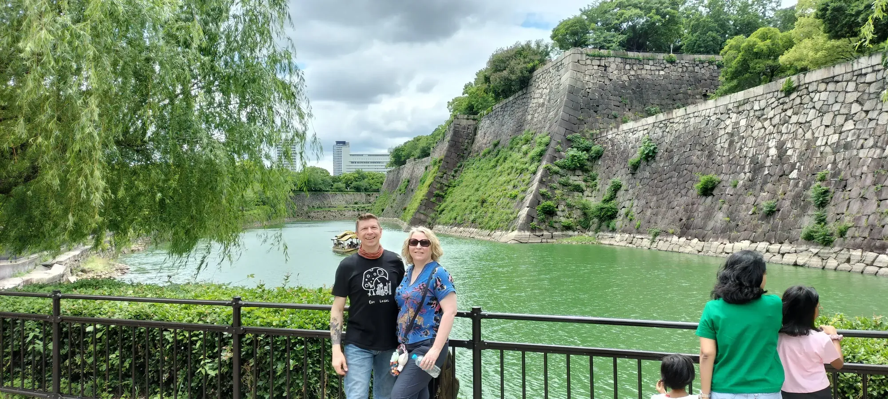
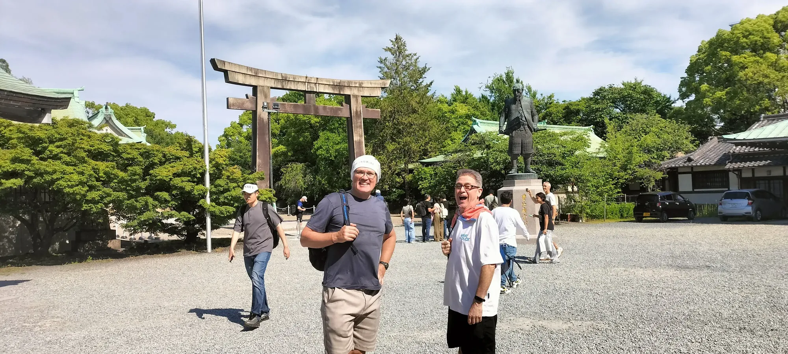

Osaka Castle Walks with Edward - History Beyond the Postcard
An Osaka Castle Park tour for Shogun-series fans looking for accurate, accessible history.
Warrior monks fortified it. A peasant rebuilt it. A shogun buried it. Walk the remains of three fortresses, each one burying the last. Discover why Osaka became home to Japan’s most powerful castle.
Discover the stops ↓
Walk with a historian who lives beside it. Small groups. Osaka Castle every day • 2.5 Hours • English • ¥9,500/person
Last updated: September 2026
Edward Iftody — Osaka Castle's Resident Historian
We begin this investigation with two revolutionary movements — Oda Nobunaga and the Ikko‑ikki — both determined to tear down a broken system and replace it with a new order, and the irreconcilable clash over what Japan should become.
Three fortresses. Each one built on the ruins of the last. Examine all three with a historian who lives beside it.
The first was Ishiyama Hongan-ji — a Buddhist warrior stronghold the Jesuits described as the strongest fortress in Japan. It resisted Oda Nobunaga for a decade before burning in 1580. The second was Toyotomi Hideyoshi's golden citadel — the most powerful castle in Japan — buried deliberately under eleven metres of earth by the Tokugawa in 1620. The third is what stands today: a 1931 concrete reconstruction, built on top of everything that came before.
Most visitors photograph the third version without knowing the other two exist.
This walk shows you all three.
Using old maps, GPS-capable historical overlays, and on-site viewpoints, we rebuild the vanished layers of the castle — the lost Toyotomi towers, the original moat system, the buried stone walls seen only in excavation. You will see how each era deliberately erased and replaced the last, because throughout Japan's long history, power wasn't just won on the battlefield—it was stolen through broken oaths, and maintained by rewriting the past.
The walk ends at the Aoyamon Gate — the eastern threshold of the castle precinct, and the point where the Toyotomi story reaches its most contested moment. This is where you learn why the Shogun took the extraordinary step of burying a defeated enemy’s castle under eleven metres of earth. Standing here, you’ll realize that the massive stone walls above ground aren't just monuments to a victory—they are a physical cover-up of a dynasty betrayed.
Along the way we move at a relaxed pace, pausing at each location for stories, questions. The castle park also offers exceptional seasonal photography — plum blossoms, cherry blossoms, summer reflections across the moat, and the sharp clarity of winter light on stone. There is no rushing. This is Osaka Castle at the pace it deserves.
After the tour, a full historical reference document covering everything we discussed is yours to keep.
Ideal for:Shogun-series fans looking for accurate, accessible history, first-time visitors to Osaka Castle, travellers who want a complete historical overview, and anyone who wants to understand the full sweep of the Sengoku era.
"We had the most incredible experience with Edward exploring Osaka Castle. Edward was incredibly knowledgable and so friendly. Seeing Osaka Castle through Edward's historical lens was an absolute highlight of our trip to Japan."
— David, Australia
The Ground
The Stops
Four stops — warehouses, Naniwa Palace, Ishiyama Hongan-ji, and Osaka Castle — with stories and sub-stops along the way.
Walk with a historian who lives beside it. Small groups. Osaka Castle every day • 2.5 Hours • English • ¥9,500/person
Edward Iftody — Osaka Castle's Resident Historian


Clarifications
Because we abandon generic textbook folklore to analyze actual military tactics, primary source evidence, and geopolitical betrayals. Instead of a standard, crowd-following sightseeing walk, this tour offers a rigorous, investigative breakdown for serious history enthusiasts who want to dissect the defensive strategy of the castle, the resistance of warrior monks, and the real, unvarnished history of the samurai era.
Yes. This walk is built around the violent transfer of power that defined Osaka Castle: the warrior monks who defied Oda Nobunaga, the peasant-ruler Toyotomi Hideyoshi who built the original castle over their ashes, and the Tokugawa shogunate that then buried Hideyoshi's fortress to erase his legacy. For travelers who want the Toyotomi vs Tokugawa story told through archaeology, earthworks, and primary sources rather than a reconstructed keep, this is the best Osaka Castle history tour to choose.
Before Osaka Castle ever existed, the strategic high ground of the Uemachi ridge was controlled by the Ikko-ikki—a fiercely independent sect of warrior monks and devout peasants. Operating from their massive fortress-temple, Ishiyama Hongan-ji, they wielded immense economic and military power. They were such a formidable force that they famously held off the ruthless warlord Oda Nobunaga in a brutal, ten-year siege. We explore how their faith, wealth, and mastery of the landscape made them an existential threat to the samurai class.
Toyotomi Hideyoshi's ascent from a low-born peasant foot soldier to the supreme military ruler of Japan is unparalleled. After the monk stronghold was finally eradicated, Hideyoshi built his visionary Osaka Castle directly over its ashes to project absolute, unassailable power. We trace how this "peasant ruler" weaponized massive stone architecture, immense hoards of gold, and cultural diplomacy to cement his authority and transform Osaka into the political heart of a newly unified Japan.
When the succeeding Tokugawa shogunate took power, they systematically buried Hideyoshi's castle—and the temple ruins beneath it—under meters of earth to erase his legacy. However, the topography still tells their story. We treat the modern park as an active archaeological site, reading the surviving earthworks, shifting waterways, and the natural defenses of the ridge to reconstruct the lost fortresses of both the warrior monks and the men who succeeded them.
Standard tours focus on the concrete, post-war reconstructed interior of the castle keep. This walk is an intellectual investigation personally led by Edward Iftody. We bypass the tourist crowds inside the keep to examine the raw historical layers on the grounds themselves, tracing the brutal transition of power from religious zealots to military unifiers. It is a premium experience specifically designed for experienced travelers who want to challenge surface-level national narratives.
Go Deeper
Research by Edward Iftody, Osaka-based historian and resident historian at Osaka Castle.
This reconstruction draws on contemporary European accounts, Japanese archaeological research, historical geography, and the surviving physical landscape.